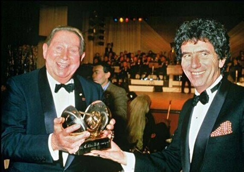
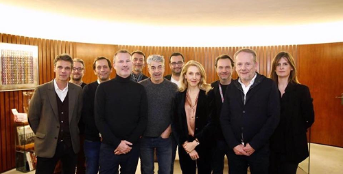

President de l'Association pour les editions 2026 et 2027 : Antoine Gouiffes-Yan
L'Association "Les Victoires de la Musique" a ete creee le 26 juin 1985. Son objectif est d'organiser et de produire trois emissions de television sous forme d'un spectacle "en direct" pour les Victoires de la Musique, et les Victoires de la Musique Classique et d'un film pour les Victoires du Jazz, durant lesquels sont decernes des prix, dits "Victoires".


L'Association "Les Victoires de la Musique", association regie par la loi de 1901, regroupe 27 membres dont 16 organisations de la filiere musicale (reparties en 4 colleges :
le college des auteurs, compositeurs, editeurs, le college des artistes interpretes, le college des producteurs phonographiques et le college des producteurs de spectacles), le Ministere de la Culture (DGMIC et DGCA), 5 membres associes et 2 membres observateurs (CNM).
President de l'Association pour les editions 2026 et 2027 : Antoine Gouiffes-Yan
President des Victoires du Jazz 2026 : Bruno Guermonprez
President des Victoires de la Musique Classique 2026 : Herve Defranoux
Directeur general : Jean-Yves de Linares
Directrice executive : Octavie de Tournemire
Direction artistique des ceremonies :
Les Victoires de la Musique : Virginie Petit
Les Victoires de la Musique Classique : Anne Gubian
Les Victoires du Jazz : Octavie de Tournemire
La production executive des 3 ceremonies est assuree par l'Association.
Date : 13 fevrier 2026